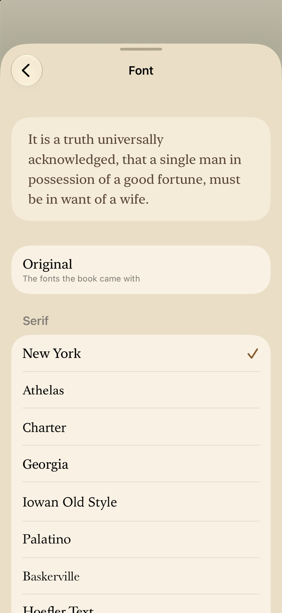

Reading
Everything about the page: how to turn it, what’s in the menus, how to make it look the way you like, and how to keep what you find with bookmarks, highlights and notes.
The page and taps
Libretto keeps the page clear: no buttons over the text until you ask for them.
- Turn the page by tapping its left or right edge, or by swiping. A slow drag works too. With a keyboard, the arrow keys turn pages.
- Bring up the menu with a tap in the middle of the page or along its top. With the menu up, a tap anywhere puts it away.
- Scrolling (Page Turns set to Scroll), there are no edges to tap: a tap anywhere brings up the menu.
- While Auto-Scroll runs, a tap in the middle pauses or resumes it instead, and the top still brings up the menu. See Hands-free reading.
- Press and hold to select text. A press is never a tap, so the page stays put; and while text is selected, a tap only puts the selection away.
- Links take you where they point, and a footnote’s marker shows its note (see Footnotes).
On an iPhone Duo, the book opens with the phone: two pages side by side when it’s half open like a book, and folding mid-page keeps your place down to the sentence. See iPad, Duo, Watch and TV.
Page controls
Page controls are big buttons beside the page: the menu button, Play and Pause while you’re reading along, and next and previous page. They’re for one-handed reading, reading in bed, or anywhere tapping the page itself is awkward. Set them in Aa → Layout → Page Controls.
- Automatic On
- Down the right edge when you hold the device sideways, where your thumb rests, and along the bottom when it’s upright.
- Landscape and Portrait
- With Automatic off, choose Right, Bottom or Off for each way of holding it. (On the iPhone Duo’s outside screen, upright, it’s Right or Off.)
- Lock Page Off
- On: while the controls are showing, only their buttons work. Taps and swipes on the page are ignored, so holding the device never turns a page by accident. Off: the controls are there and the page works as usual too. Either way, pressing and holding still selects text.
You don’t have to go to Layout to change them: the ⋯ menu in a book has Page Controls (on or off for the way you’re holding the device now) and, while they’re showing, Lock Page.
Where they’re off, tap the page edges or swipe to turn, and tap the middle for the menu. They never show on an iPhone Duo standing in tabletop posture, where the bottom half has controls of its own.
The menu

Tap the middle of the page and the menu’s two bars appear, with the page shrinking a little between them so nothing is covered.
The top bar
- ✕ Close, on its own on the left, back to your library.
- The book’s title and the chapter you’re in. On an iPhone held upright they get a row of their own under the buttons.
- ✨ Catch Me Up, in pink, on devices with Apple Intelligence: a recap of what you’ve read. See Recaps, Story Map and the AI.
- Bookmark: bookmark this page, or remove its bookmark.
- Contents: the book’s contents, bookmarks, highlights and story (see Contents).
- Aa: how the page looks (see Appearance).
- ⋯: everything for this book (see the ⋯ This Book menu).
The scrubber
Along the bottom of an EPUB is the whole book as a line, with a tick at each chapter. Drag along it and a bubble says where you’d land (“Chapter 47 · p. 343 · 72%”). Near a chapter’s start it settles there with a tick you can feel, and when you let go it jumps, with Back to return (see Back after a jump).
Under the line, “Chapter 32 of 61” on one side and the page and percent on the other. Chapters are counted from the book’s contents, so front and back matter, part headings and title pages don’t count. PDFs have a plain page slider instead.
One Play
The bottom bar gains playback controls only when there’s something to play: Read-Along’s for a book paired with its audiobook (speed, skip back, Play, skip forward, and the chapter’s time left), Read Aloud’s once you’ve started it (with ✕ to stop), or Auto-Scroll’s while it runs. When they show, the Play button on the page controls steps aside, so there’s only ever one Play on screen.
While you’re browsing a book (Just Browse), the menu says “Browsing: your progress isn’t saved”, with Start Reading beside it.
The ⋯ This Book menu

The ⋯ at the end of the top bar has everything for the book you’re reading, so you never need to leave it for Settings or the library. Item by item:
- Search Book
- Find a word or phrase anywhere in the book. See Searching a book.
- Highlights & Notes
- This book’s highlights, with how many. See Highlights and notes.
- Recaps & Story Map
- Chapter recaps and the map of who’s who, with Chapter Recaps on. See Recaps, Story Map and the AI.
- Read Along
- For a book paired with its audiobook: on or off for this time, with how the pairing is going under it. Or Pair with Audiobook… for a book without one. See Read-Along and audiobooks.
- Read Aloud
- Your device’s own voices read the book: Play, Pause or Resume, Voice, Speed, Stop at End of Chapter and Stop Reading Aloud.
- Sleep Timer
- While an audiobook is playing: the last one you used again, End of Chapter, End of Next Chapter, or 5 to 60 minutes; and Turn Off Sleep Timer.
- Start Auto-Scroll
- The page moves up by itself, at the speed shown; Stop Auto-Scroll while it runs. Auto-Scroll Speed picks from 150 to 500 words a minute. See Hands-free reading.
- Blink to Turn Pages
- Blink twice to turn the page, using the front camera.
- Lock Page and Page Controls
- As in Page controls: the buttons beside the page, for the way you’re holding the device, and whether the page itself answers taps while they show.
- Finish By…
- A day to finish this book by, with the date and how it’s going once there is one. See Finish By dates.
- Mark as Read
- Or Mark as Unread, here and on Hardcover for a linked book. See Mark as Read.
- Share Card…
- An image of the book and your reading of it. See Share Cards.
- Book Details
- The book’s own page. See Book Details.
Each book gets what applies to it: a PDF has no Read Aloud, Auto-Scroll or recaps, for example.
Contents
The Contents button opens a sheet with a Search Book field at the top and up to four tabs:
- Contents
- The book’s chapters, with the one you’re in marked “You’re here”. Tap one to go there. With Chapter Recaps on, each chapter you’ve read has a pink Recap button that opens its recap.
- Bookmarks
- Every page you’ve bookmarked, including ones made while listening to the paired audiobook.
- Highlights
- Your highlights and notes in this book, by chapter.
- Story
- With Chapter Recaps on: the recaps of what you’ve read, and the Story Map. See Recaps, Story Map and the AI.
Appearance
Tap Aa in the menu. The sheet takes your book’s colors, so you see each change on the page behind it. Settings → Appearance is the same page, with App Theme and App Icon above it.


Page Theme
Ten swatches in two rows, light on top and dark below. The sheet changes with the page as you choose.
- Paper Default
- White, with near-black text.
- Sepia
- Warm cream paper with brown text.
- Stone
- A soft warm grey.
- Rose
- Pale pink with deep rose-brown text.
- Sage
- Pale green with dark green text.
- Night
- Near-black with soft grey text.
- Slate
- Dark blue-grey with cool light text.
- Cocoa
- Dark brown with cream text.
- Forest
- Deep olive green, with cream text and gold.
- Black
- Pure black with grey text, for the darkest room.
App Theme
The page theme is only for books. How the rest of Libretto looks (Home, your library and Settings) is Settings → Appearance → App Theme: System (follows your device), Light, Sepia, Dark, or Midnight, a slate blue with yellow. Each book keeps its page theme whichever you choose.
Text
- Smaller and Larger 19 pt
- Either side of the size, from 12 to 34 points.
- Font New York
- A page of its own, below.
- Line Spacing Normal
- Compact, Normal or Relaxed.
- Justify Text Off
- Lines run to both edges, as in a printed book, instead of a ragged right edge.
Fonts
The Font page shows a few lines in the font you’ve chosen, in your theme, then every choice written in its own face:
- Original: the fonts the book came with.
- Serif: New York, Athelas, Charter, Georgia, Iowan Old Style, Palatino, Baskerville, Hoefler Text and Times New Roman.
- Sans Serif: San Francisco, Rounded, Seravek, Avenir Next and Optima.
They’re the reading fonts that come with iOS, so there’s nothing to download.
Layout
Aa → Layout has Pages and the page controls.
- Automatic Default
- Follows how you hold it: one page upright, two side by side when turned. On iPhone Duo, it follows the fold.
- One Page
- One page, whichever way you hold it.
- Two Pages
- Two pages side by side whenever the screen is wide enough, even upright on an iPad.
Your place is kept when the screen changes shape: folding or unfolding, rotating, or resizing a window. On an iPhone Duo, the Layout page also has the Duo’s own options; see iPad, Duo, Watch and TV.
Page Turns
- Slide Default
- Each page slides across as you turn it: the quickest.
- Curl
- The page curls over like paper. Swipe and it follows your finger, lifting from wherever you touch; let go early and it falls back. In a two-page spread it turns about the spine. With Reduce Motion on, pages slide instead.
- Scroll
- No pages: each chapter is one column you scroll down. At a chapter’s end, “Keep scrolling for…” names the next one; pull up past it to go on. The page buttons scroll a screen at a time, less two lines so you don’t lose your place.
More on the sheet
Page Footer picks the line under the page (next section), and Today’s Target Bar shows your Finish By progress along the bottom of the page (see Today’s Target Bar and Home’s Today). More in Settings, at the bottom, opens the rest of Settings over the book without closing it.
Bookmarks
Tap Bookmark in the menu’s top bar to bookmark the page: a red ribbon appears, with a tap you can feel. Tap it again to remove it. Find them all under Contents → Bookmarks, and tap one to go there.
A book and its paired audiobook share their bookmarks: one made while listening opens the book at those words, and one made while reading plays from them. In a PDF, a bookmark is a page.
Highlights and notes

Press and hold a word, drag the handles over the passage you want, and tap Highlight (or Add Note to write one straight away). The same menu has Remind Me for a name you’ve forgotten (see Recaps, Story Map and the AI) and, in a paired book, Play from Here.
The highlight takes the last ink you used, and whole words only. A small menu then offers:
- The five inks: yellow, green, blue, pink and purple.
- Note (or Edit Note): what you want to remember about it.
- Copy, Play (reading along, to hear it from there) and Remove.
Tap a highlight any time to bring that menu back. Highlighting across highlights you’ve already made joins them into one. Highlights follow the text through font and size changes, and folding the Duo.
Your highlights in one list
Contents → Highlights, or ⋯ → Highlights & Notes, lists this book’s highlights in reading order by chapter, with their notes. From there you can:
- Filter by ink, or see All.
- Share them all as text, to Notes, a message or anywhere.
- Swipe one to Remove it or add a Note; long-press it to change its Ink, copy or share it.
- Tap one to turn to it. Reading along, the audio moves there too.
From the library, a book’s long-press menu has its highlights too, with how many.
The Notebook
Every book’s highlights, notes and bookmarks are also in the Notebook (Home’s Notebook section, Notebook in the ⋯ menu on Home and Books, or a tab of its own). Its search looks through every passage, note and bookmark at once, with chips for All, Highlights, Notes and Bookmarks. Opening a book from there is a visit; see Opening from the Notebook.
Searching a book
Choose ⋯ → Search Book, or type in the Search Book field at the top of Contents. Every place the word or phrase appears is listed by chapter, with the words around it and the match in bold.
- Case, accents and curly apostrophes don’t matter, and the last word matches as you type it: “buffalo hun” finds “buffalo hunter”.
- Tap a result to turn to it, with the match marked in orange. A bar on the page then steps to the previous or next result; tap its middle for the list again, or ✕ to finish.
- Reading along, the audio moves with you.
The first search in a book takes a moment, as Libretto reads it chapter by chapter; results appear as each chapter is read. After that, searching the book is instant.
Footnotes
Tap a footnote’s marker and the note appears in a small window beside it, so you never lose your page. Go to Note takes you to the note in its place, with Back to return. Footnote windows don’t open while Lock Page is on.
Back after a jump
Whenever you jump somewhere (a link, a contents entry, a search result, a bookmark or highlight, the scrubber, Go to Note, or Remind Me’s Go to First Mention), a pill appears over the bottom of the page: Back to and the chapter you came from, or Back to Where You Were within the same chapter.
- Tap it to go straight back to the page you jumped from.
- It goes away once you’re back there, after six page turns, or when you tap ✕ to stay.
- Jumping again keeps the first place, so following a note on to another still brings you back to where you were reading.
While Read-Along is playing, Back to Narration takes its place. PDFs don’t have it.
Opening from the Notebook
Tap a highlight or bookmark in the Notebook and the book opens right there, as a visit. Your place stays where it was: Continue, your stats, Hardcover and the reading log don’t see it, and Read-Along stays off. The menu says “Visiting from your Notebook: your place stays where it was”.
- Look around the chapter you visited and close the book: nothing is asked and nothing changes.
- Read on into another chapter (or more than two pages away in a PDF) and Libretto asks Save Your Progress? when you close.
- Tap Read from Here in the menu to move your place to where you are and carry on reading from there.
PDFs and comics
PDFs
A PDF keeps its own pages, so a few things work differently:
- Aa has the page themes, Layout (one page or two side by side), Page Turns and Today’s Target Bar. Text size, fonts and the Page Footer are for books whose text can reflow.
- Scroll gives one continuous column of pages, and Curl curls them.
- A page slider replaces the chapter scrubber.
- The list button opens Bookmarks and Highlights, with search at the top. Bookmarks are pages; highlights are drawn over the page without changing your file.
- The ⋯ menu has search, highlights, the sleep timer, Blink to Turn Pages, the page controls, Finish By, Mark as Read, Share Card and Book Details. Read-Along, Read Aloud, Auto-Scroll and chapter recaps are for books with flowing text.
- PDFs don’t have footnote windows or Back after a jump.
Comics
Comics (CBZ) show a page per screen, or two in a spread. They’re pictures, so Read Aloud, Auto-Scroll and the Story features aren’t offered for them, and each picture counts as a page in your stats.
Everything else
FB2, text, Markdown, HTML and RTF files become ordinary pages when they’re added, so they read just like an EPUB.
Questions
I keep turning the page by accident when I hold my phone.
Turn on Lock Page (⋯ → Lock Page, or Aa → Layout) while the page controls are showing. Then only their buttons turn pages, and taps and swipes on the page are ignored.
How do I get rid of the buttons beside the page?
Turn off Page Controls in the ⋯ menu (for the way you’re holding the device), or set Landscape and Portrait to Off in Aa → Layout. Then tap the edges or swipe to turn pages, and tap the middle for the menu.
Why did the page theme change but not Home?
They’re separate on purpose: Page Theme is for books, and App Theme (Settings → Appearance) is for everything else. You might like Sepia pages and a Midnight library, for instance.
Why does the footer’s page count differ from the one on Home?
The footer counts screens as they’re laid out on your device right now, so each page you turn takes one off. Home, Reading Stats and the widgets count printed pages, which stay the same whatever your font or text size.
Can I change the font in a PDF?
No: a PDF’s text is part of its fixed pages. You can still choose a page theme, one or two pages, and how pages turn.
I jumped to the contents and lost my place.
Look for the Back to pill at the bottom of the page and tap it. It stays for six page turns. If it’s gone, the scrubber and Contents will get you close, and Book Details’ Reading History shows where each session ended.
Do my highlights go to my other devices?
Yes, with Sync with iCloud on: highlights, notes and bookmarks are kept in your own iCloud. See Sync with iCloud.